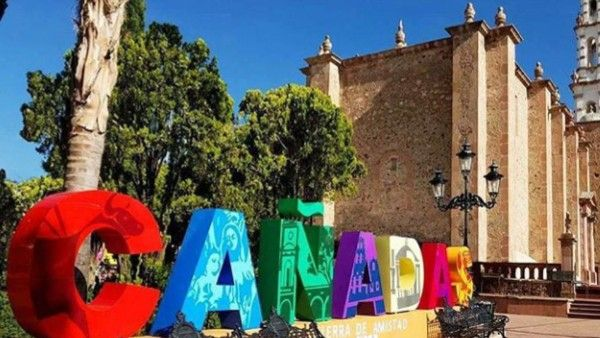

Cañadas de Obregón
“Tierra de Amistad”
Cañadas de Obregón, municipio enclavado en la Región Altos Sur de Jalisco, es un destino que entrelaza profundas raíces históricas con la calidez de su gente. Originalmente habitado por tribus nahoas, este lugar fue testigo de la conquista española y evolucionó de ser una pequeña ranchería a la vibrante población que es hoy. Su nombre actual honra tanto su tradición original como la memoria del ilustrador Álvaro Obregón. En la actualidad, el municipio destaca por su patrimonio y por albergar a la delegación de Temacapulín, reconocida como Pueblo Mágico desde 2023, ofreciendo una auténtica experiencia de la cultura alteña.
Ver en Google Maps